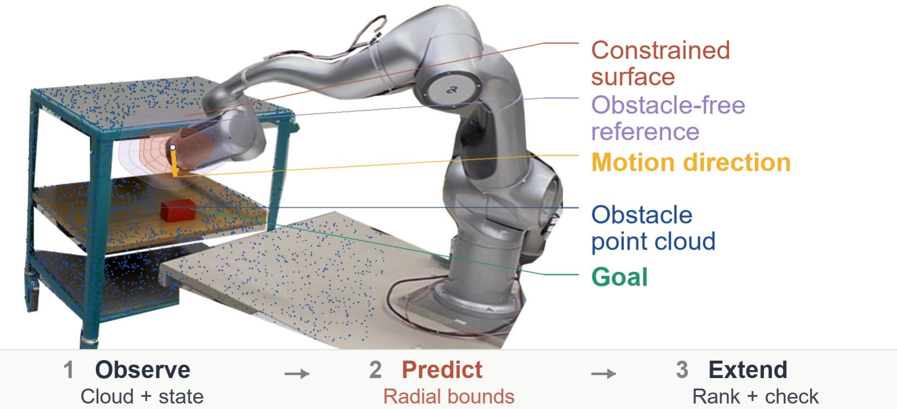
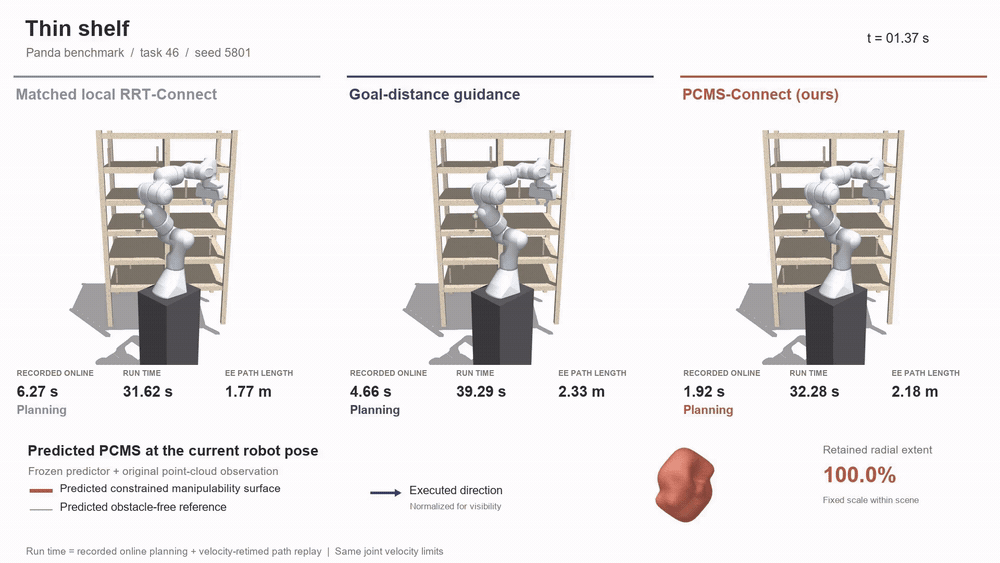
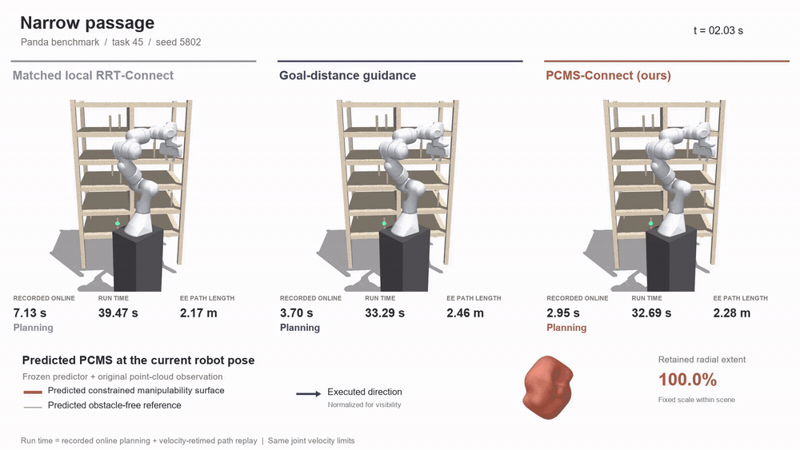
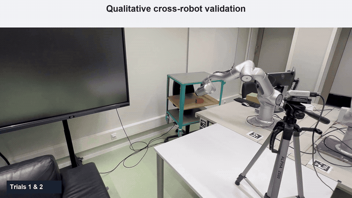
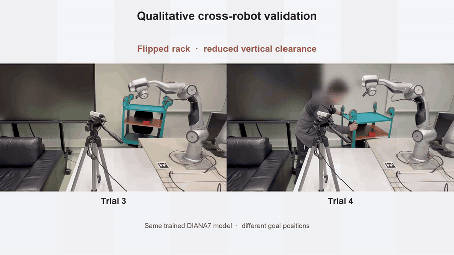

State + obstacle points
Combine the current joint configuration with nearby obstacle observations.
Learning Point-Cloud-Constrained Proposals
for Narrow-Space Planning

Directional motion bounds guide both the direction and length of local joint-space proposals.
Conceptual surface overlays illustrate the mechanism on the physical setup.
Five simulated planning cases followed by physical rack-reaching experiments on Diana 7.
The Point-Cloud-Constrained Manipulability Surface describes directional motion bounds at the current robot configuration.
Combine the current joint configuration with nearby obstacle observations.
A shared predictor approximates constrained radial bounds along joint-velocity rays.
Combine available motion with task progress to construct finite joint-space candidates.
Geometrically validate candidate edges before extending the bidirectional search trees.
Matched local RRT-Connect, goal-distance guidance, and PCMS-Connect, shown alongside the predicted surface at the current pose.

The lower panel follows changes in the learned directional bounds. The arrow indicates the replayed motion direction. Shown clips are selected examples; aggregate results are reported above.

Simulation footage replays saved joint paths. The displayed run time combines recorded online planning time and velocity-retimed path replay; it is not a measured hardware execution time.
Qualitative experiments use RealSense D435i point clouds and one fixed, robot-specific trained model across the tested rack configurations.

The red block defines the goal. Experiments vary the rack placement and the goal position.

Flipping the rack creates a narrower opening. The right-hand configuration also lowers the rack height.
The code package includes model weights, four Panda scene families, the shared point-cloud collision interface, and a path viewer.
Python 3.10+ · CPU inference · No training required
Installation & reproduction guide →python -m pip install -r requirements.txt
python run.py --method ours
python run.py --method goal_distance
python run.py --method rrt_connect